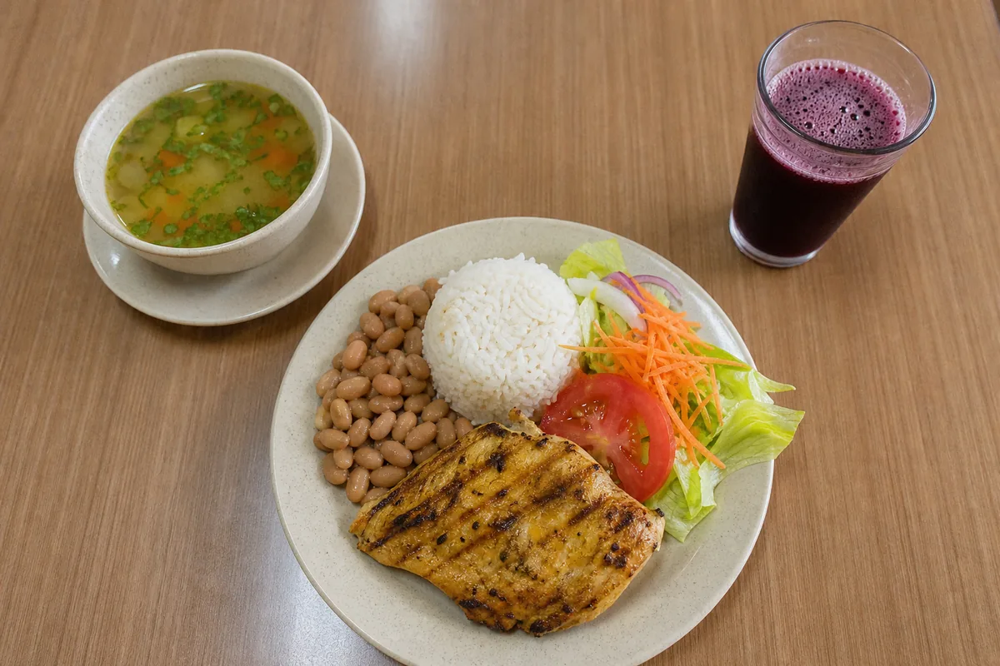

Guías prácticas
Cómo elegir en un menú de S/ 15 sin arruinar tu plan
Segundo, entrada y refresco: la fórmula para pedir bien cuando comes en la calle todos los días.
El método
Cada plan nace de una evaluación clínica completa y evoluciona contigo. No recibes una hoja impresa: recibes un proceso.
Composición corporal, historia clínica, hábitos, horarios y análisis de laboratorio si los tienes.
Menús con alimentos que ya compras, porciones claras y reemplazos para comer fuera de casa.
Controles quincenales, soporte por WhatsApp y ajustes cada vez que tu vida cambie.
El objetivo final: que sepas comer bien sin depender de nadie. Ni siquiera de mí.
Especialidades
Resultados
Casos, cifras, nombres e imágenes recreados como contenido conceptual para esta demo de portafolio.
Un día en tu plan
Ejemplo real de un día del programa de descenso de peso. Nada exótico, nada importado: mercado, sazón y estrategia.
Journal
Preguntas frecuentes
Contacto
Cuéntame tu objetivo y te responderé personalmente con los siguientes pasos. La orientación inicial no tiene costo.
Escribir por WhatsAppGracias, {{ formNombreCorto }}. Te responderé en menos de 24 horas hábiles al contacto que dejaste.